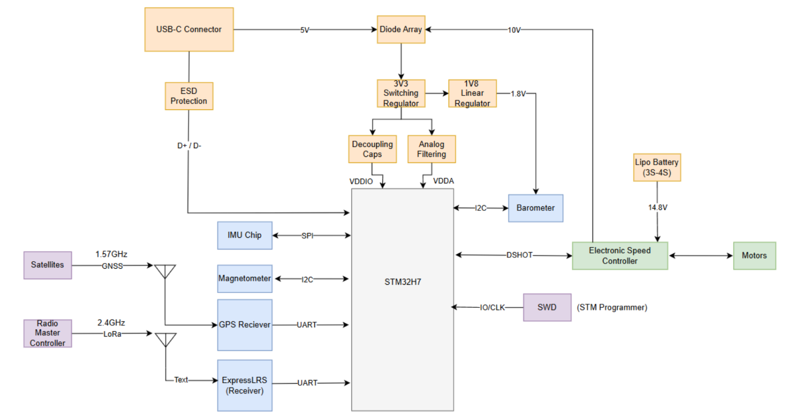
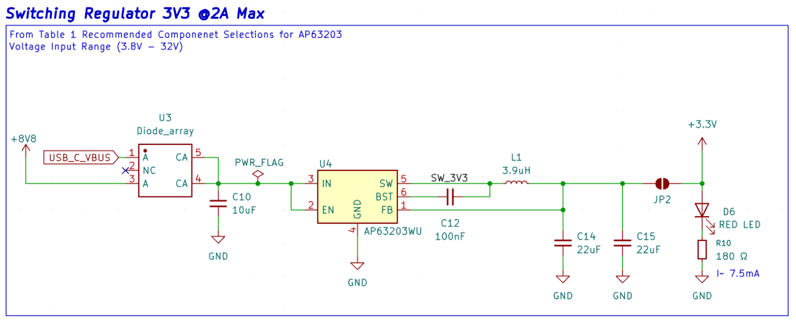
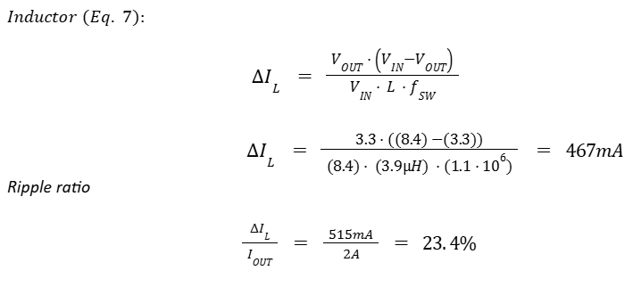
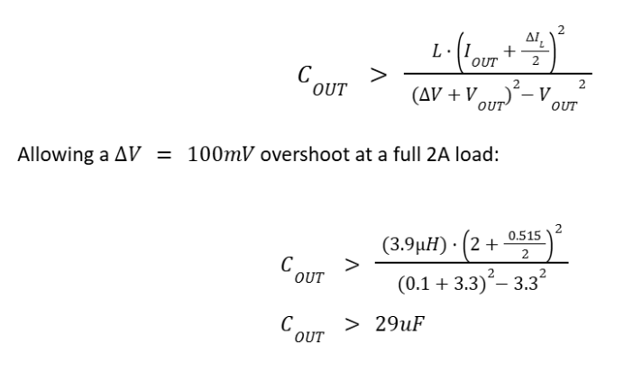
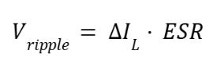
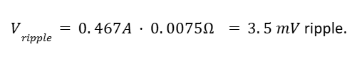
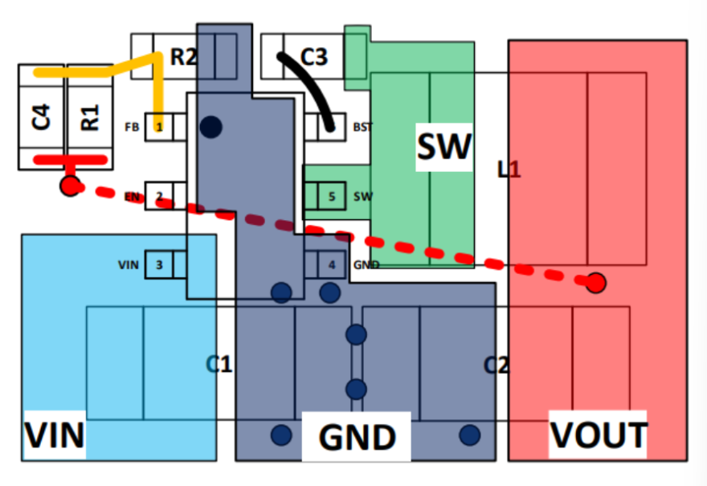

Flight Controller Design Justification
High Level Overview
Description of Project
The OSCAR quadcopter is a senior design project developing a custom flight stack from the board level up. This document covers the flight controller (FC), one of three custom PCBs in the stack alongside the Electronic Speed Controller (ESC) and the GNSS/Receiver board. The FC is a 4-layer board built around the STM32H753VIT6 microcontroller, sized to mount on a 5" frame with a 50×50 mm M2 hole pattern.
The FC's role is to close the inner attitude control loop: read the IMU and barometer, fuse them with off-board GNSS and magnetometer data, run the PID loop, and drive four DSHOT motor outputs to the ESC. It also exposes a USB-C interface for configuration and logging, an SWD port for development, and a UART to the ExpressLRS receiver.
The hardware is designed to support two firmware paths. The first is Betaflight as the baseline target, which gets the craft flying with a known good codebase. The second is a custom firmware target intended for research workloads (custom estimators, observers, outer-loop control) layered on top of the inner loop. The H7 was selected specifically to leave headroom for the second path without having to redesign the board.
Scope
This document is a block-by-block design justification for Rev 1.0 of the FC PCB. Each subsystem is presented with its part selection rationale, key datasheet parameters, the calculations or design references used to set component values, and the resulting margin against the application requirement.
In scope:
- Power tree (input protection, source OR-ing, 3.3 V buck, 1.8 V LDO)
- MCU subsystem (part selection, clocks, boot/reset, SWD, indicator LEDs)
- Communication and I/O (USB 2.0 FS, DSHOT outputs)
- On-board sensors (primary IMU, barometer, EEPROM, secondary IMU placeholder)
Out of scope and covered in companion documents: the ESC board, the GNSS/Receiver board (including the L1 patch antenna and TESEO-LIV3R front end), frame mechanical design, and firmware implementation. Off-board sensor selection (magnetometer, GNSS) is summarized in Section 4.4.5 for context but justified in the GNSS Design Justification document.
Block Diagram
The figure below shows the FC's functional groupings and the interfaces it presents to the rest of the OSCAR stack.

Power enters from one of two sources. USB-C delivers 5 V during bench work and configuration; the ESC delivers 8.8 V regulated (derived from a 3S-4S LiPo running 11.1-14.8 V nominal) during flight. Both feed a dual Schottky diode array that selects whichever rail is higher and blocks reverse current into the inactive source. The OR'd output drives the 3.3 V switching regulator, which supplies the MCU's VDDIO through bulk decoupling and VDDA through a separate analog filter network. A 1.8 V LDO branches off the 3.3 V rail to supply the ENS220 barometer.
The STM32H753 sits at the center. On-board sensors connect locally: the ICM-40609-D IMU over SPI, and the barometer and magnetometer over I2C. USB D+/D− routes from the USB-C connector through a USBLC6-2 ESD array to the H7's OTG_FS peripheral. Four DSHOT lines run to the ESC, which in turn drives the four motors. An SWD header exposes SWDIO/SWCLK for the ST-Link programmer.
Two RF paths terminate off-board and are shown for context only. The 1.575 GHz GPS L1 signal reaches the TESEO-LIV3R through a patch antenna on the GNSS daughter board, which returns position to the H7 over UART. The 2.4 GHz ExpressLRS link terminates on the receiver module and returns control inputs to the H7 over a second UART.
System Constraints
This section sets the fixed boundaries the design has to fit inside: physical geometry, input power range, layer stackup, and what JLCPCB can actually fabricate. Every part choice in Section 4 is constrained by one or more of these.
Size
The FC mounts to a 5" quadcopter frame using the standard 50×50 mm M2 hole pattern. The outer board envelope is 56×56 mm, set by the frame's mid-plate cutout and the need to clear the four arm bolts. This footprint is the binding constraint on the MCU package (LQFP100 at 14×14 mm fits; larger BGA parts do not leave room for the sensor cluster and connectors), on connector placement, and on routing density. All passives use 0603 to keep hand-rework feasible during bring-up; the ESD601 TVS diodes are the single 0402 exception, which are optional if ESD events are not a concern.
Power Input
The FC accepts two power sources that may be present simultaneously. Each source feeds the diode-OR network described in Section 4.1.2; the higher rail wins and the other is reverse-biased.
Dual Source support. USB-C provides 5 V at up to 1.5 A during bench work, configuration, and firmware flashing. The ESC-derived rail provides 8.8 V (regulated down from a 3S-4S LiPo running 11.1-14.8 V nominal) during flight. The 3.3 V buck (AP63203) accepts 3.8 V to 32 V, so the headroom above the highest expected ESC rail is sufficient.
Board Stackup (4-layer)
The board is designed in KiCad and fabricated by JLCPCB. The 4-layer stackup is:
| Layer | Type | Material | Thickness | εr |
|---|---|---|---|---|
| F.Cu | Copper (1 oz) | — | 0.035 mm | — |
| Dielectric 1 | Prepreg 7628 | — | 0.2104 mm | 4.4 |
| In1.Cu | Copper (0.5 oz) | — | 0.0152 mm | — |
| Dielectric 2 | Core FR-4 | — | 1.065 mm | 4.6 |
| In2.Cu | Copper (0.5 oz) | — | 0.0152 mm | — |
| Dielectric 3 | Prepreg 7628 | — | 0.2104 mm | 4.4 |
| B.Cu | Copper (1 oz) | — | 0.035 mm | — |
Total board thickness is 1.606 mm, within tolerance of the 1.6 mm JLCPCB option. Layer net assignments are:
| Layer | Purpose |
|---|---|
| F.Cu | Signal + GND pour |
| In1.Cu | GND (solid) |
| In2.Cu | 3.3 V |
| B.Cu | Signal + GND pour |
Three of the four layers carry ground. F.Cu and B.Cu are flooded with ground pour because most subcircuits reference ground locally. In1.Cu is solid ground for two reasons: it gives the USB differential pair on F.Cu a continuous reference 0.2104 mm directly below the trace (the dielectric height used in the CPWG geometry in Section 4.3.1), and sandwiching the 3.3 V plane (In2.Cu) between two ground references lowers loop inductance for the buck regulator and contains switching noise. In2.Cu carries 3.3 V because that rail powers the MCU, both IMUs, the EEPROM, magnetometer, and SWD header — a dedicated plane removes the need to route 3.3 V as a trace anywhere.
Manufacturing Capabilities (JLCPCB Constraints)
The design adheres to JLCPCB's standard multilayer capabilities as of April 2026. The binding constraints that show up in the layout are:
| Parameter | JLCPCB Capability |
|---|---|
| Min. trace width / spacing | 3.5 mil (0.09 mm) multilayer |
| Min. via hole / diameter | 0.2 mm / 0.45 mm (no upcharge) |
| Board thickness | 1.6 mm selected |
| Outer / inner copper weight | 1 oz / 0.5 oz |
| Min. annular ring | 0.13 mm |
| Min. drill-to-copper | 0.2 mm |
| Min. silkscreen width / height | 0.15 mm / 1 mm |
| Surface finish | HASL (with lead) |
| Impedance tolerance | ±10% (controlled impedance) |
The 1.6 mm board with 1 oz outer / 0.5 oz inner copper produces a dielectric height of 0.21 mm between F.Cu and In1.Cu. This height feeds directly into the CPWG width calculation for the USB pair in Section 4.3.1, where a 0.2286 mm trace width with 0.2 mm gap to ground gives the required 45 Ω single-ended (90 Ω differential) impedance. The 0.2 mm via hole / 0.45 mm diameter is the smallest size JLCPCB does not surcharge for; it is also large enough to fit between adjacent pins on the LQFP100 fanout without violating the 0.09 mm spacing rule.
IMPORTANT: In JLCPCB's Gerber viewer, always run the Design for Manufacturing check to validate your board is meeting specification before purchasing.
System Interfaces
This section defines the FC's contract with the rest of the OSCAR stack: the connectors it exposes, the signals on each pin, and the protocols spoken over them.
USB-C (data + power)
The USB-C port (J1) is the FC's bench interface for firmware flashing and configurator access. It is wired as a USB 2.0 Full Speed device on the H7's OTG_FS peripheral.
| Parameter | Value |
|---|---|
| Connector | USB-C 2.0 receptacle, 16 pin |
| Role | USB device |
| Speed | Full Speed, 12 Mbps |
| Power in | 5 V nominal, up to 1.5 A from host |
| Data lines | D+/D− routed as 90 Ω differential pair |
| Cable | Any standard USB-C cable |
| Orientation | Reversible |
Enumeration behavior is set by the BOOT0 switch (Section 4.2.3): with BOOT0 high the H7 enumerates as a DFU device for firmware flashing; with BOOT0 low it boots user firmware and enumerates as whatever the firmware presents (CDC for Betaflight Configurator, MSC for blackbox access). VBUS is OR'd with the ESC rail internally so the board may be powered from USB alone for bench work.
ESC Interface (power input, DSHOT outputs, telemetry return)
The ESC interface is the in-flight power and control link between the FC and the OSCAR ESC board. It carries the 8.8 V rail up to the FC and four DSHOT motor commands plus one telemetry return down to the ESC.
| Pin | Signal | Direction | Description |
|---|---|---|---|
| 1 | 8V8 | ESC → FC | 8.8 V power input from ESC, feeds diode-OR network |
| 2 | NC | — | Reserved |
| 3 | FC_RX | ESC → FC | ESC telemetry return (UART RX into FC) |
| 4 | Motor 1 | FC → ESC | DSHOT command to motor 1 |
| 5 | Motor 2 | FC → ESC | DSHOT command to motor 2 |
| 6 | Motor 3 | FC → ESC | DSHOT command to motor 3 |
| 7 | Motor 4 | FC → ESC | DSHOT command to motor 4 |
| 8 | GND | — | Return reference |
| Parameter | Value |
|---|---|
| Power in | 8.8 V nominal from ESC BEC, up to 32 V tolerated by buck |
| Motor protocol | DSHOT300 (bidirectional capable) |
| Motor count | 4 (M1-M4) |
| Telemetry | One UART RX line, ESC side baud rate per ESC firmware |
| ESD protection | TVS array (D23-D28) on all signal lines |
Bidirectional DSHOT is supported by the hardware but enabled or disabled in firmware. The motor pinout (M1-M4 ordering) follows the Betaflight convention so the standard mixer mapping applies without remapping.
External Board Interfaces
The FC exposes four 4-pin headers for off-board connections. Each header follows the same pattern: power, ground, and two signal lines.
SWD Debug Header
| Pin | Signal | Description |
|---|---|---|
| 1 | GND | Return / Reference |
| 2 | SWDIO | Bidirectional data, to PA13 |
| 3 | SWCLK | Clock from debugger, to PA14 |
| 4 | 3V3 | Target reference voltage |
ST-Link compatible. 2.54 mm pitch.
Magnetometer I2C Breakout
| Pin | Signal | Description |
|---|---|---|
| 1 | GND | Return / Reference |
| 2 | MAG_SDA | I2C Data |
| 3 | MAG_SCL | I2C Clock |
| 4 | 3V3 | Supply to MMC5983MA |
400 kHz I2C, dedicated bus (not shared).
GNSS UART Breakout
| Pin | Signal | Description |
|---|---|---|
| 1 | GND | Return / Reference |
| 2 | GPS_TX | FC → GNSS, config into GNSS |
| 3 | GPS_RX | GNSS → FC, NMEA out of GNSS |
| 4 | 3V3 | Supply to TESEO-LIV3R |
9600 baud default, configurable to 115200. NMEA 0183.
ExpressLRS Receiver Header
| Pin | Signal | Description |
|---|---|---|
| 1 | GND | Return / Reference |
| 2 | ELRS_TX | FC → ELRS |
| 3 | ELRS_RX | ELRS → FC |
| 4 | 3V3 | Supply to ELRS receiver |
420 kbaud, CRSF protocol. Pinout follows the Betaflight Connector Standard for ELRS Nano receivers.
Power Test Header
| Pin | Signal | Description |
|---|---|---|
| 1 | GND | Return / Reference |
| 2 | 1V8 | From MIC5317 LDO output |
| 3 | 3V3 | From AP63203 buck output |
| 4 | 8V8 | From ESC rail |
Current available on each rail is bounded by the upstream regulator: 150 mA on 1V8, 2 A on 3V3, and 2 A on the ESC's 8V8.
Firmware Target (Betaflight & Custom Firmware)
Under construction — to be developed later in the semester.
The FC supports two firmware paths sharing the same hardware. Detailed target definitions, resource assignments, and build instructions will be added as bring-up progresses.
Path 1: Betaflight (baseline). A custom Betaflight target will be submitted following manufacturer guidelines. Key target metadata includes: target name (TBD, format OSCAR_FC_H753), MCU define STM32H743xx, sensor defines for the ICM-40609-D, ENS220 barometer (driver TBD), and MMC5983MA magnetometer (driver TBD). The receiver will use USE_SERIALRX_CRSF on the ELRS UART, with 4× DSHOT300 motor outputs on TIM1/TIM8 channels and an 8 kHz PID loop with bidirectional DSHOT enabled.
The ENS220 barometer and MMC5983MA magnetometer are not in mainline Betaflight as of this revision. Driver work is required before the Betaflight path is functional.
Path 2: Custom research firmware. A bare-metal or HAL-based firmware built on STM32CubeIDE for downstream research work. Both paths flash over USB DFU (BOOT0 switch high) or over SWD.
Flashing. Both paths flash over USB DFU (BOOT0 switch high, see Section 4.2.3) or over SWD. A standalone How to Flash document will accompany the firmware release.
Connector Pinout Summary
Under construction — to be developed next semester.
Block by Block Verification
Power Tree
Input Protection & TVS Diodes
This section covers three distinct protection elements: general purpose TVS diodes on exposed external signal lines, the dedicated USB data-line ESD array, and the diode array network that isolates the dual power sources.
Key TVS Selection Parameters. A TVS diode is characterized by four parameters that together determine whether it will protect the downstream circuit without disturbing it:
- Reverse stand-off voltage (VRWM): Must exceed the highest steady-state signal voltage on the protected line.
- Breakdown / clamping voltage (VBR or VCL): The clamp voltage must stay below the protected device's absolute maximum input rating.
- Dynamic resistance (RDYN): Lower RDYN means the clamp voltage rises less under high surge currents.
- Line capacitance (CLine): On high-speed signals this directly degrades edge rates.
General Purpose TVS — TI ESD601
The TI ESD601 was selected for ESD protection on exposed external signal and power pins (UART headers, SWD Debug, 3.3V, etc). The diode is bidirectional and sized as a 0402 device with the 18V reverse stand off, 33V clamp at 2.77A, a dynamic resistance of 0.9Ω and a typical line capacitance of 0.3pF, this is from figure 5.1 of electrical characteristics from ESD601. The ESD601 carries IEC 61000-4-2 ratings of 15kV contact and 15kV air discharge, which is well above the required IEC 61000-4-2 approval of 8kV contact and 15kV air discharge.
USB Data-Line Protection — ST USBLC6-2
The USB D+ and D- lines are exposed externally though the USB-C connector, making them vulnerable to ESD events before the signal reaches the MCU. The USBLC6-2SC6 is a dedicated USB ESD protection array in an SOT-23-6 package, placed as close to the connector as possible on F.Cu. The part contains two diode pairs, one for D+ and one for the D-, with a shared VBUS rail and a shared ground. Any positive ESD transient on either dataline is clamped to VBUS any negative transient is clamped to GND. The clamping voltage stays well below the STM32H7's GPIO absolute maximum of 4.0V (STM32H753 datasheet, Section 6.3.1).
Key parameters from the USBLC6-2 datasheet (Table 2, Electrical Characteristics):
| Parameter | Value | Requirement |
|---|---|---|
| Reverse stand-off voltage | 5 V | Matches VBUS (5 V USB) |
| Line capacitance (D+/D−) | 1.7 pF maximum | Low enough for USB FS (12 Mbps) |
| IEC 61000-4-2 contact discharge | ±8 kV | ±8 kV |
| IEC 61000-4-2 air discharge | ±15 kV | ±15 kV |
Power Supply Source Isolation (USB vs. LiPo)
The board accepts power from two sources: USB-C (5 V nominal) and the ESC-derived rail (8.8 V nominal). Both can be present simultaneously, most commonly during bench testing when USB is connected for debugging while the battery is also live for the motors. Without isolation, the higher voltage source would force current backward into the lower one, potentially damaging the USB host.
Each source feeds a forward-biased diode with both cathodes tied together at the regulator input. The diode with the higher anode voltage conducts and supplies the load; the other is reverse-biased and blocks. The OR'd node sits at the conducting source voltage minus one forward drop of approximately 0.39 V.
Part Selection — ROHM RBE2EA20A. A dual Schottky in a SOT-25T package, with both diodes brought out independently so a single part covers both sources. Schottky was chosen for its lower forward drop (VF = 0.39 V) compared to the 0.7 V drop of a standard PN diode, which directly reduces continuous power dissipation.
| Parameter | Rating | Application |
|---|---|---|
| Reverse Voltage — VR | 20 V | Blocks 12 V max ESC rail from the USB (met with margin) |
| Steady Draw — IO | 2 A | 3.3 V regulator maximum output — met with margin |
| Surge Current — IFSM | 5 A | Regulator inrush headroom |
Tradeoff acknowledgement. Diode-OR-ing continuously dissipates power proportional to forward voltage. Worst case at full load: Pdiode = 0.39 V × 2 A = 780 mW. In practice, measured board current during active firmware is roughly 200 mA, giving Pdiode ≈ 78 mW continuously. The alternative of a physical jumper separating each power supply was considered but is more tedious during testing.
Buck to 3.3 V
The board's primary rail is 3.3 V, supplying the MCU, both IMUs, EEPROM, magnetometer, GNSS, and SWD header. The Diodes Inc. AP63203 was selected to step down the OR'd input (nominally 4.6 V to 8.4 V after the Schottky drop) to a fixed 3.3 V output.
Why a switching regulator over an LDO. An LDO dropping the worst-case 8.4 V to 3.3 V at 2 A output would dissipate 10.2 W as heat — unacceptable on a 50×50 mm board with no heatsinking. Even at a more realistic 300 mA load, an LDO would dissipate 1.53 W. The AP63203 at roughly 92% efficiency dissipates approximately 86 mW for the same 300 mA load, which is acceptable.

C10 (10 μF) is the input bulk cap, L1 (3.9 μH) and C12 (100 nF, bootstrap) follow the datasheet recommended values, and C14/C15 (2× 22 μF) form the output filter. JP2 isolates the buck output from the 3.3 V rail during bring-up so the regulator can be verified before any downstream load is connected.
| Parameter | Rating |
|---|---|
| Input Voltage Range — VIN | 3.8 V - 32 V |
| Output Current — IOUT | 2 A continuous |
| Switching frequency — fSW | 1.1 MHz |
| Fixed Output Voltage — VOUT | 3.3 V |
Component value verification. Component values were taken from AP63203 datasheet Table 2 (recommended selection for fixed 3.3V output). The calculations below verify they satisfy the design equations at the worst-case input voltage.
Looking at the worst case ripple is highest VIN. Using VIN = 8.4V, VOUT = 3.3V, fSW = 1.1MHz, and recommend L = 3.9H.

The datasheet targets a ripple ratio between 30% and 50% for optimal inductor sizing. At 23.4% our inductor sits below the rated range which means the recommended inductor is slightly oversized relative to where the datasheet would place the optimum. Having a smaller δIL means that our peak current is less from equation 8, in addition that we will have a smaller ripple which is a benefit for this design.
The minimum output capacitance to hold a 100mV overshoot during a full 2A load step (AP63203 Eq. 10):

The design places 2x 22uF X5R ceramic capacitors on the output for 44uF total, which is above the minimum. Additional decoupling capacitors distributed along the 3.3V plane increase the effective output capacitance further.
Output voltage ripple from ESR (AP63203 Eq. 9):

We have already calculated δIL from before in Eq. 7. However the capacitors I had specified for our design did not mention the ESR. However we can estimate, based on utilizing a ceramic capacitor rated at X5R, we can expect an ESR < 0.015 from here. Making these assumptions, two in parallel of our worst case would assume 7.5mΩ.

This is approximately 0.1% of VOUT which is well inside the supply tolerance for the MCU and other peripherals. The ICM-40609-D is the most ripple-sensitive load on this rail and its datasheet allows up to 50 mV peak-to-peak on its supply, so the 3.5 mV figure clears that requirement by more than an order of magnitude even before accounting for the IMU's local decoupling.

The high-di/dt loop (input cap C1 to VIN to GND return) is kept tight on F.Cu with a single short return path to minimize loop area. The SW node copper (green) is held to the minimum area needed to carry inductor current, since any extra copper here radiates at fSW . The Output caps C1 and C2 return to the same GND pour as the input cap, finally the feedback trace (red dashed) is routed away from the SW node to keep switching noise out of the Feedback path.
Linear Regulator to 1.8 V
The ENS220 barometer requires a dedicated 1.8 V supply. The Microchip MIC5317-1.8YM5 (SOT23-5) is a fixed 1.8 V, 150 mA LDO with a 2.5 V to 6 V input range. Feeding 3.3 V from the AP63203 directly into VIN is within spec. EN is tied to VIN, so the regulator turns on whenever the 3.3 V rail is present.
Dropout check. Maximum dropout at 150 mA is 380 mV, so the minimum VIN needed is 1.8 V + 0.38 V = 2.18 V. The 3.3 V supply gives 1.12 V of headroom, so dropout is not a concern.
Thermal check. The ENS220 is the only load on this rail, consuming 75 μA typical. Using 100 μA as a conservative bound:
PD = (3.3 V − 1.8 V) × 0.0001 A = 0.15 mW
TJ = 85°C + 0.15 mW × 253°C/W = 85.04°C
Junction temperature is essentially equal to ambient at this load level, so thermal performance is not a binding constraint. JP1 sits between the LDO output and the ENS220 supply pin; it is left open during initial bring-up so the 1.8 V rail can be measured without risk to the barometer, then bridged with solder for normal operation.
MicroController Unit
MCU Selection Justification (STM32H753 vs. F4/F7/G4)
Flight controller MCU selection is constrained by three dominant pressures: the control loop must close at a rate high enough that gyro samples do not age between iterations, the chip must expose enough timers, DMA streams, and serial peripherals to drive every motor and sensor without pin conflicts, and the firmware target should align with a maintained Betaflight build.
Part selection — STM32H753VIT6. Single-core Cortex-M7 at 480 MHz with a double-precision FPU, 16 kB cache, 2 MB dual-bank flash, 1 MB RAM, and an LQFP100 package. The 480 MHz core delivers roughly 3× the cycles per control period of the F4 at 168 MHz, and roughly 2× an F7 at 216 MHz. The double-precision FPU matters for research add-ons where outer-loop estimators operating on accumulated state are sensitive to single-precision drift.
The DMAMUX subsystem is the second decisive feature. On F4-class parts each peripheral is hard-wired to a specific DMA stream, which forces the well-known Betaflight pin-conflict tables. On the H7, DMAMUX1 and DMAMUX2 route any peripheral request to any DMA stream, so the four DSHOT outputs, the SPI buses to both IMUs, the I²C bus to the barometer, and every UART coexist without that combinatorial constraint.
| Resource | H753VIT6 Capacity | Application Demand |
|---|---|---|
| Core clock | 480 MHz Cortex-M7 + DP FPU | Inner loop, filtering, headroom for user code |
| Flash | 2 MB | Betaflight, configuration, OSD, etc. |
| RAM | 1 MB | HAL-based drivers |
| Advanced timers | TIM1, TIM8 | Up to 8 DSHOT channels with complementary outputs |
| USART / UART | 4 USART + 4 UART | ESC telemetry, GPS, ELRS, debug |
| SPI | 6 | IMU selection |
| I2C | 4 | Barometer, magnetometer, EEPROM |
| USB | OTG FS and OTG HS | Device FS |
Tradeoff. The H753VIT6 is a 100-pin LQFP with 0.5 mm pitch and draws meaningfully more current than the F4 at idle (up to 200 mA vs. 10–20 mA), and is approximately 3× more expensive. It also occupies more board area. These tradeoffs were accepted in exchange for the performance headroom and flexible DMA routing.
Clock Source
The design uses the internal 64 MHz HSI as the PLL input and leaves the HSE pins unpopulated. The OSC_IN and OSC_OUT footprints were removed from this revision — the crystal, load capacitors, and feedback resistor are not on the board.
HSI is sufficient because this board uses neither USB High-Speed (480 Mbps) nor Ethernet MAC, the two cases that normally force an external HSE. Full-Speed USB (12 Mbps) tolerates the HSI because the H7's Clock Recovery System (CRS) trims HSI48 against USB SOF packets in hardware, pulling the 48 MHz USB clock inside the ±0.25% Full-Speed spec without any external reference. DSHOT, UART, SPI, and I²C all derive their bit timing from the same SYSCLK and tolerate the HSI's ±1% factory trim without issue.
Boot and Reset Circuitry
Boot select — SPDT switch on BOOT0. A Single Pole Double Throw (SPDT) switch ties BOOT0 either to 3.3 V (system bootloader / DFU mode) or to GND (user flash / normal operation). R12 sits in series between the switch wiper and BOOT0 to bound fault current if the pin is externally driven while the switch holds the opposite rail, turning a potential hard short into a sub-mA event.
Reset — NRST with debounce cap and pushbutton. NRST is tied directly to a 0.1 μF capacitor to GND with SW2 providing an optional external reset path to ground. NRST has a permanent internal pull-up (~40 kΩ typical), so no external pull-up is needed. The RC time constant is:
τ = 40 kΩ × 0.1 μF = 4 ms
This is well above any contact bounce duration and above the H7's reset recognition thresholds.
SWD Debug Interface
The SWD port provides flash programming, breakpoint debugging, and register inspection. SWD was chosen over JTAG because it uses only two signal pins instead of five, freeing PB3, PB4, and PA15 for other functions.
| Signal | Pin | Function |
|---|---|---|
| SWDIO | PA13 | Bidirectional data |
| SWCLK | PA14 | Clock from debugger |
| 3.3 V | header | Target reference voltage |
| GND | header | Return path (Reference) |
PA13 and PA14 are dedicated SWD pins that come up in their debug alternate function automatically out of reset, so no firmware configuration is required to attach a debugger to a freshly programmed or bricked part. No external pull-up resistors are needed — the H753 enables the correct internal pull-up on PA13 and a pull-down on PA14 while the pins are in their debug alternate function.
Debug LEDs
The Debug LEDs serve two purposes:
- Allow firmware development testing and indicate if any thread has ended for any reason.
- Used for calibration before flight to verify all sensors are well calibrated before flying.
The board contains a red, green, and blue LED. The red LED is tied to the output of the 3.3 V regulator to indicate if power is on (180 Ω current-limiting resistor, ~7.5 mA). The blue and green LEDs are driven from GPIO outputs for debugging purposes (50 Ω and 60 Ω respectively, ~10 mA each).
Communication & I/O
USB 2.0 Full Speed Implementation
USB 2.0 Full Speed (12 Mbps) was selected as the bench interface because it is sufficient for Betaflight Configurator, firmware flashing via DFU, and blackbox log retrieval, without requiring the external crystal that USB High-Speed demands. The connector is a 16-pin USB-C receptacle (J1) with CC1 and CC2 tied through 5.1 kΩ resistors to GND, signaling to the host that the device accepts 5 V at up to 1.5 A (USB-C default current). VBUS is sensed through a resistor divider (R4 5.1 kΩ / R6 15 kΩ) that produces ~3.0 V at the MCU's VBUS sensing pin. SBU1, SBU2, and the shield pin (S1) are left unconnected.
The D+ and D− traces are routed as a Coplanar Waveguide with Ground (CPWG) differential pair on F.Cu, targeted at 45 Ω single-ended (90 Ω differential). Using the JLCPCB 4-layer stackup with a dielectric height of 0.21 mm (εr = 4.34) and a 0.2 mm gap to the coplanar ground, a trace width of 0.2286 mm yields Z0 ≈ 45.3 Ω. Both traces are length-matched to 11.0 mm.
DSHOT Motor Outputs
Four DSHOT300 motor command lines are driven from STM32H7 timer channels (TIM1/TIM8) using DMA, enabling the digital protocol without CPU intervention during each frame. Bidirectional DSHOT is supported in hardware. The specific timer-to-pin mapping will be finalized during firmware bring-up and documented in a companion target definition file.
Sensors
The FC integrates sensors sufficient for both manual and autonomous flight modes. Manual flight requires an IMU and magnetometer for attitude estimation. Autonomous flight additionally requires a barometer for altitude hold and GNSS for position.
Primary IMU — ICM-40609-D
The ICM-40609-D was selected as the primary inertial measurement unit. Key characteristics:
- Power consumption: 3.3 V × 0.77 mA = 2.5 mW
- Output data rate: Up to 32 kHz for both accelerometer and gyroscope
- Gyroscope range: Up to ±2000 °/s (handles fast flight maneuvers)
- Accelerometer range: Up to ±32 g
- Sensitivity error: ±0.5% for both accel and gyro
The IMU connects to the MCU over SPI. Local decoupling consists of a 100 nF and a 2.2 μF capacitor on the VDD supply pin.
Secondary IMU — BNO055
The BNO055 was included as a failsafe / backup IMU because team members had prior programming experience with it, making it easier to bring up quickly. However, it offers a lower output data rate and no significant advantage in noise or error performance over the ICM-40609-D. It was not utilized in this revision and will be removed in the next revision.
Barometer — ENS220
The ENS220 was selected to provide altitude and temperature measurements. Key characteristics:
- Power consumption: 1.8 V × 75 μA = 1.35 μW
- Output data rate: Up to 1 kHz
- Relative altitude accuracy: ±20 cm in air
The ENS220 is powered from the dedicated 1.8 V LDO described in Section 4.1.4 and communicates over I2C with 2.7 kΩ pull-up resistors.
EEPROM — ST M24512-RMN6TP
A 512-Kbit serial I2C bus EEPROM included for both flight data logging and USB communication in the future. Address pins E0-E2 are tied to GND, setting the I2C address to 0x50 as expected by the STM32 HAL. WC# is tied high to enable write operations during normal use. Supply range is 2.4-5.5 V; the 3.3 V rail is well within spec.
Off-Board Sensors (GNSS, Magnetometer)
Magnetometer — MMC5983MA. Selected for orientation measurement.
- Power consumption: 3.3 V × 1 μA = 3.3 μW
- Output data rate: Up to 1 kHz
- Heading accuracy: ±0.5°
The magnetometer was placed on a separate board further from the FC to avoid EMI interference from the motors, which could otherwise corrupt heading measurements.
GNSS — TESEO-LIV3R. Selected for X/Y position estimation.
- Power consumption (tracking): 3.3 V × 21 mA = 70 mW
- Constellations: GPS, GLONASS, BeiDou
- Output data rate: Up to 10 Hz
- Position accuracy: <1.8 m CEP (50%)
The GNSS module was also placed on a separate board for RF reasons: a patch antenna requires a long, uninterrupted ground plane and no boundary conditions that would attenuate the weak GPS L1 signal. Both the magnetometer and the GNSS/receiver boards are contained on the same daughter board mounted directly above the flight controller. Full design justification for the GNSS front-end is provided in the companion GNSS Design Justification document.